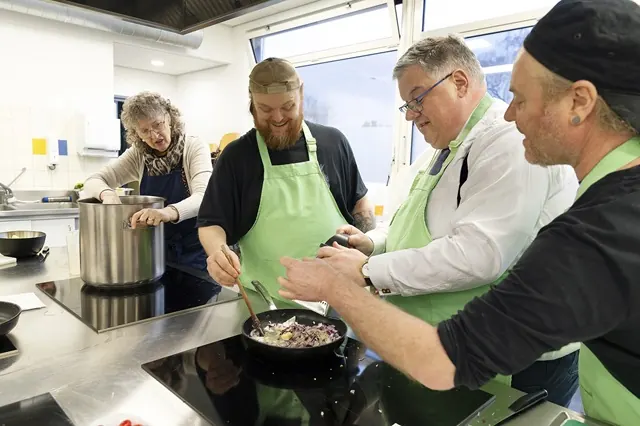

Nieuws ·
Burgemeester kookt mee bij Van Tuin Tot Bord

Burgemeester Bruls bezocht afgelopen week Van Tuin Tot Bord in wijkcentrum De Schakel. Hier wordt elke dinsdag voor zo’n 45 mensen gekookt. Onder het motto ‘samen oogsten, samen koken, samen eten’, is Stichting Van Tuin Tot Bord in drie Nijmeegse wijken actief. Samen met bewoners worden verse groenten in de buurtmoestuinen verbouwd. Met de oogst bereiden de kookteams in het buurtrestaurant een driegangendiner voor de buurt.
Bruls helpt een handje mee
Terwijl Bruls de uien voor de salade snijdt, spreekt hij enkele vrijwilligers die trouw elke week de maaltijd voorbereiden samen met kok John Carrie. Het enthousiasme van de kookploeg is niet te missen en Bruls luistert geïnteresseerd naar alle verhalen van de mensen. Het blijkt al gauw dat het vrijwilligerswerk voor veel mensen méér is dan de handen uit de mouwen steken. Het werk leidt naar meer contacten in de wijk, betaalde banen, het draagt bij aan eigenwaarde en aan een dagritme.
Nieuwe ontmoetingen
Wanneer de gasten zijn aangeschoven, serveert de kookploeg samen met de burgemeester de soep. De gasten vertellen graag aan de burgemeester wat ze vinden van het wekelijkse buurtrestaurant: Diane: “Eerst was hier in de wijk weinig te doen. Dat is de laatste jaren verbeterd, o.a. met dit buurtrestaurant. Het eten is altijd lekker en ik heb hier veel nieuwe mensen ontmoet”. Een andere gast, Ben: “Samen eten is gewoon gezelliger. Anders zit ik thuis ook maar alleen”.
Uitbreiding
Er is veel animo voor de Van Tuin Tot Bord activiteiten. Daarom is directeur Elly Janssen bezig met het voorbereiden van een nieuwe, vierde locatie in een andere wijk in Nijmegen. Zij is daarvoor in gesprek met bewoners, de gemeente en met verschillende organisaties en partijen.
Word Vriend van Van Tuin Tot Bord
Particulieren en bedrijven kunnen Vriend van de stichting worden middels een financiële bijdrage. Met deze bijdrage kunnen bestaande activiteiten worden uitgevoerd én nieuwe activiteiten ontwikkeld worden. Stichting van Tuin Tot Bord is daarom op zoek naar mensen die de stichting een warm hart toedragen.
Meer informatie op www.vantuintotbord.nl